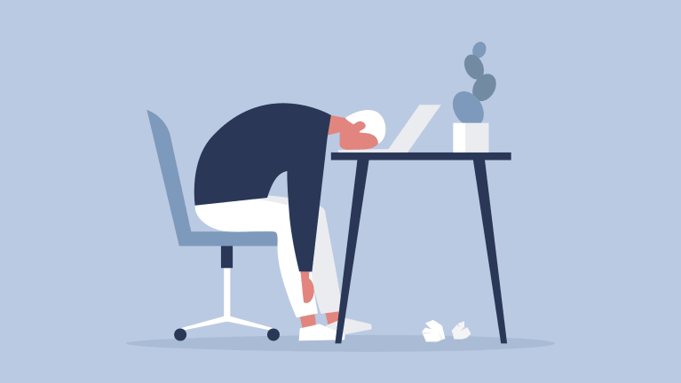

The struggles of IT
As im typing this, i can't help but feel burnt out. I know what ive created, i can take pride in. At the same time, i feel frustrated with it. Not for the difficulty of the results but the fact that i have no passion in web design. I understand we have to have comprhension of all things related to IT. I also understand by doing these excercises and projects, we can help establish a clearer path towards what our niche is in IT/computer science.With that being said, besides doing these classes, i have found i have no desire to move forward towards web development. It has given me some insight on how web sites work.The biggest issue was designing the CSS.
